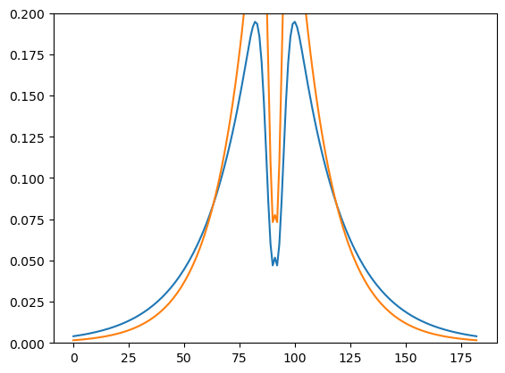

class BaseFunctional(nn.Module):
"""Base functional layer."""
features: int
kernel_size: Union[int, Sequence[int]]
strides: int = 1
padding: str = "SAME"
feature_group_count: int = 1
kernel_init: Callable = nn.initializers.lecun_normal()
bias_init: Callable = nn.initializers.zeros_init()
xmean: float = 0.5
ymean: float = 0.5
@nn.compact
def __call__(self,
inputs,
):
sigma = self.param("sigma",
nn.initializers.uniform(scale=1),
(self.features*inputs.shape[-1],))
# x, y = jnp.meshgrid(jnp.linspace(0,1,num=self.kernel_size), jnp.linspace(0,1,num=self.kernel_size))
# kernel = jax.vmap(self.gaussian, in_axes=(None,None,None,None,0,None), out_axes=-1)(x, y, self.xmean, self.ymean, sigma, 1)
# kernel = jnp.reshape(kernel, newshape=(self.kernel_size, self.kernel_size, inputs.shape[-1], self.features))
kernel = self.generate_kernel()
## Add the batch dim if the input is a single element
if jnp.ndim(inputs) < 4: inputs = inputs[None,:]
outputs = lax.conv(jnp.transpose(inputs,[0,3,1,2]), # lhs = NCHW image tensor
jnp.transpose(kernel,[3,2,0,1]), # rhs = OIHW conv kernel tensor
(self.strides, self.strides),
self.padding)
return outputs
@staticmethod
def generate_function(x, y, xmean, ymean, sigma, A=1):
return A*jnp.exp(-((x-xmean)**2 + (y-ymean)**2)/(2*sigma**2))
def return_kernel(self, params):
x, y = jnp.meshgrid(jnp.linspace(0,1,num=self.kernel_size), jnp.linspace(0,1,num=self.kernel_size))
kernel = jax.vmap(self.gaussian, in_axes=(None,None,None,None,0,None), out_axes=-1)(x, y, self.xmean, self.ymean, params["params"]["sigma"], 1)
kernel = jnp.reshape(kernel, newshape=(self.kernel_size, self.kernel_size, 3, self.features))
return kernelFunctional layers
JaX/Flax implementation of functional layers.
Base layer
First we’ll define a base class that will be used by every other functional layer.
Gaussian layer
GaussianLayer
GaussianLayer (features:int, kernel_size:Union[int,Sequence[int]], strides:int=1, padding:str='SAME', feature_group_count:int=1, kernel_init:Callable=<function init>, bias_init:Callable=<function zeros>, use_bias:bool=False, xmean:float=0.5, ymean:float=0.5, fs:float=1, normalize_prob:bool=True, normalize_energy:bool=False, parent:Union[Type[flax.linen. module.Module],Type[flax.core.scope.Scope],Type[flax.linen .module._Sentinel],NoneType]=<flax.linen.module._Sentinel object at 0x7f1c5f19dcd0>, name:Optional[str]=None)
Parametric gaussian layer.
key1, key2 = random.split(random.PRNGKey(0), 2)
x = random.normal(key1, shape=(28,28,3))
model = GaussianLayer(features=1, kernel_size=5, fs=5)
variables = model.init(key2, x)
state, params = variables.pop("params")
print("Parameter shapes: ", jax.tree_util.tree_map(lambda x: x.shape, params))2023-10-26 11:00:50.291617: E external/xla/xla/stream_executor/cuda/cuda_driver.cc:268] failed call to cuInit: CUDA_ERROR_NO_DEVICE: no CUDA-capable device is detected
No GPU/TPU found, falling back to CPU. (Set TF_CPP_MIN_LOG_LEVEL=0 and rerun for more info.)Parameter shapes: FrozenDict({
A: (3,),
sigma: (3,),
})import matplotlib.pyplot as plt
kernel = model.return_kernel({"params": params}, c_in=3)
fig, axes = plt.subplots(1, 3)
for k, sigma, ax in zip(rearrange(kernel, "kx ky cin cout -> (cin cout) kx ky"), params["sigma"], axes):
ax.imshow(k)
ax.set_title(sigma)
plt.show()We can also apply a grouped convolution:
key1, key2 = random.split(random.PRNGKey(0), 2)
x = random.normal(key1, shape=(28,28,3))
model = GaussianLayer(features=3, kernel_size=5, fs=5, feature_group_count=3)
variables = model.init(key2, x)
state, params = variables.pop("params")
print("Parameter shapes: ", jax.tree_util.tree_map(lambda x: x.shape, params))Parameter shapes: FrozenDict({
A: (3,),
sigma: (3,),
})import matplotlib.pyplot as plt
kernel = model.return_kernel({"params": params}, c_in=3)
fig, axes = plt.subplots(1, 3)
for k, sigma, ax in zip(rearrange(kernel, "kx ky cin cout -> (cin cout) kx ky"), params["sigma"], axes):
ax.imshow(k)
ax.set_title(sigma)
plt.show()
We can test if the precalculated filters are updated when in training mode and stay the same when in evaluation mode:
outputs, updated_state = model.apply({"params": params, **state}, x, mutable=list(state.keys()), train=True)
assert not jax.tree_util.tree_map(lambda x,y: (x==y).all(), state, updated_state)["precalc_filter"]["kernel"]CPU times: user 54.5 ms, sys: 0 ns, total: 54.5 ms
Wall time: 53.4 msoutputs, updated_state = model.apply({"params": params, **state}, x, mutable=list(state.keys()), train=False)
assert jax.tree_util.tree_map(lambda x,y: (x==y).all(), state, updated_state)["precalc_filter"]["kernel"]CPU times: user 8.35 ms, sys: 204 µs, total: 8.56 ms
Wall time: 7.99 mskey1, key2 = random.split(random.PRNGKey(0), 2)
x = random.normal(key1, shape=(28,28,3))
model = GaussianLayerGamma(features=1, kernel_size=5, fs=5)
variables = model.init(key2, x)
state, params = variables.pop("params")
print("Parameter shapes: ", jax.tree_util.tree_map(lambda x: x.shape, params))Parameter shapes: FrozenDict({
A: (3,),
gamma: (3,),
})import matplotlib.pyplot as plt
kernel = model.return_kernel({"params": params}, c_in=3)
fig, axes = plt.subplots(1, 3)
for k, sigma, ax in zip(rearrange(kernel, "kx ky cin cout -> (cin cout) kx ky"), 1/params["gamma"], axes):
ax.imshow(k)
ax.set_title(sigma)
plt.show()We see that there is a time difference in both executions, which makes sense because when train=False, the filters don’t have to be calculated and thus the function should run faster.
And let’s see if we’re able to train the layer weights while maintaining the state:
from functools import partial
@partial(jax.jit, static_argnums=(0, 1))
def update_step(apply_fn, tx, inputs, opt_state, params, state):
def loss(params):
pred, updated_state = apply_fn({"params": params, **state},
x,
mutable=list(state.keys()),
train=True)
loss = ((pred-inputs)**2).mean()
return loss, updated_state
(l, updated_state), grads = jax.value_and_grad(loss, has_aux=True)(params)
updates, opt_state = tx.update(grads, opt_state)
params = optax.apply_updates(params, updates)
return opt_state, params, updated_state, lmodel = GaussianLayer(features=3, kernel_size=21, fs=21)
variables = model.init(random.PRNGKey(0), x)
# Split state and params (which are updated by optimizer).
state, params = variables.pop('params')
del variables # Delete variables to avoid wasting resources
tx = optax.sgd(learning_rate=3e-4)
opt_state = tx.init(params)
for i in range(1001):
opt_state, params, state, loss = update_step(
model.apply, tx, x, opt_state, params, state)
if i % 100 == 0: print(f"Loss {i}: {loss}")Loss 0: 63022.55078125
Loss 100: 6.95550537109375
Loss 200: 4.45768928527832
Loss 300: 3.467116117477417
Loss 400: 2.92319393157959
Loss 500: 2.5758800506591797
Loss 600: 2.3336243629455566
Loss 700: 2.154496431350708
Loss 800: 2.016449451446533
Loss 900: 1.9067078828811646
Loss 1000: 1.8173458576202393The loss is going down, so everything looking good so far!
Gabor layer
We’ll repeat the process but now with a Gabor functional form.
GaborLayer
GaborLayer (features:int, kernel_size:Union[int,Sequence[int]], strides:int=1, padding:str='SAME', feature_group_count:int=1, kernel_init:Callable=<function init>, bias_init:Callable=<function zeros>, use_bias:bool=False, xmean:float=0.5, ymean:float=0.5, fs:float=1, normalize_prob:bool=True, normalize_energy:bool=False, parent :Union[Type[flax.linen.module.Module],Type[flax.core.scope.Sc ope],Type[flax.linen.module._Sentinel],NoneType]=<flax.linen. module._Sentinel object at 0x7f1c5f19dcd0>, name:Optional[str]=None)
Parametric Gabor layer.
key1, key2 = random.split(random.PRNGKey(0), 2)
x = random.normal(key1, shape=(28,28,3))
model = GaborLayer(features=1, kernel_size=21, fs=21)
variables = model.init(key2, x)
state, params = variables.pop("params")
print("Parameter shapes: ", jax.tree_util.tree_map(lambda x: x.shape, params))Parameter shapes: FrozenDict({
A: (3,),
freq: (3,),
logsigmax: (3,),
logsigmay: (3,),
rot_theta: (3,),
sigma_theta: (3,),
theta: (3,),
})import matplotlib.pyplot as plt
kernel = model.return_kernel(params, c_in=3)
fig, axes = plt.subplots(1, 3)
# for k, sigmax, sigmay, ax in zip(rearrange(kernel, "kx ky cin cout -> (cin cout) kx ky"), params["sigmax"], params["sigmay"], axes):
for k, sigmax, sigmay, ax in zip(rearrange(kernel, "kx ky cin cout -> (cin cout) kx ky"), jnp.exp(params["logsigmax"]), jnp.exp(params["logsigmay"]), axes):
ax.imshow(k)
ax.set_title(f"{sigmax:.2f}, {sigmay:.2f}")
plt.show()We can test if the precalculated filters are updated when in training mode and stay the same when in evaluation mode:
outputs, updated_state = model.apply({"params": params, **state}, x, mutable=list(state.keys()), train=True)
assert not jax.tree_util.tree_map(lambda x,y: (x==y).all(), state, updated_state)["precalc_filter"]["kernel"]CPU times: user 126 ms, sys: 0 ns, total: 126 ms
Wall time: 93.3 msoutputs, updated_state = model.apply({"params": params, **state}, x, mutable=list(state.keys()), train=False)
assert jax.tree_util.tree_map(lambda x,y: (x==y).all(), state, updated_state)["precalc_filter"]["kernel"]CPU times: user 53.7 ms, sys: 848 µs, total: 54.6 ms
Wall time: 21.3 msWe see that there is a time difference in both executions, which makes sense because when train=False, the filters don’t have to be calculated and thus the function should run faster.
And let’s see if we’re able to train the layer weights while maintaining the state:
from functools import partial
@partial(jax.jit, static_argnums=(0, 1))
def update_step(apply_fn, tx, inputs, opt_state, params, state):
def loss(params):
pred, updated_state = apply_fn({"params": params, **state},
x,
mutable=list(state.keys()),
train=True)
loss = ((pred-inputs)**2).mean()
return loss, updated_state
(l, updated_state), grads = jax.value_and_grad(loss, has_aux=True)(params)
updates, opt_state = tx.update(grads, opt_state)
params = optax.apply_updates(params, updates)
return opt_state, params, updated_state, lmodel = GaborLayer(features=1, kernel_size=21, fs=21)
variables = model.init(random.PRNGKey(0), x)
# Split state and params (which are updated by optimizer).
state, params = variables.pop('params')
paramsFrozenDict({
freq: Array([ 0.6816269, 10.3780775, 1.1226437], dtype=float32),
logsigmax: Array([-2.4631429, -2.717532 , -0.7740796], dtype=float32),
logsigmay: Array([-3.0342553 , -2.29462 , -0.74401677], dtype=float32),
theta: Array([3.050746 , 0.9813687, 1.7434841], dtype=float32),
sigma_theta: Array([2.1122246, 2.7645009, 0.9459793], dtype=float32),
rot_theta: Array([2.5787003, 1.4155393, 0.6662881], dtype=float32),
A: Array([1., 1., 1.], dtype=float32),
})model = GaborLayer(features=1, kernel_size=21, fs=21)
variables = model.init(random.PRNGKey(0), x)
# Split state and params (which are updated by optimizer).
state, params = variables.pop('params')
del variables # Delete variables to avoid wasting resources
tx = optax.sgd(learning_rate=3e-4)
opt_state = tx.init(params)
print(params)
for i in range(1001):
opt_state, params, state, loss = update_step(
model.apply, tx, x, opt_state, params, state)
if i % 100 == 0: print(f"Loss {i}: {loss}")
# print(f"Loss {i}: {loss}")
# print(params)FrozenDict({
freq: Array([ 0.6816269, 10.3780775, 1.1226437], dtype=float32),
logsigmax: Array([-2.4631429, -2.717532 , -0.7740796], dtype=float32),
logsigmay: Array([-3.0342553 , -2.29462 , -0.74401677], dtype=float32),
theta: Array([3.050746 , 0.9813687, 1.7434841], dtype=float32),
sigma_theta: Array([2.1122246, 2.7645009, 0.9459793], dtype=float32),
rot_theta: Array([2.5787003, 1.4155393, 0.6662881], dtype=float32),
A: Array([1., 1., 1.], dtype=float32),
})
Loss 0: 10626.9873046875
Loss 100: 6.143118381500244
Loss 200: 3.38569712638855
Loss 300: 2.52960205078125
Loss 400: 2.1249730587005615
Loss 500: 1.892602801322937
Loss 600: 1.7426190376281738
Loss 700: 1.6378751993179321
Loss 800: 1.560489296913147
Loss 900: 1.50087308883667
Loss 1000: 1.4534586668014526The loss is going down, so everything looking good so far!
Center Surround layer
CenterSurroundLogSigma
CenterSurroundLogSigma (features:int, kernel_size:Union[int,Sequence[int]], strides:int=1, padding:str='SAME', feature_group_count:int=1, kernel_init:Callable=<function init>, bias_init:Callable=<function zeros>, use_bias:bool=False, xmean:float=0.5, ymean:float=0.5, fs:float=1, normalize_prob:bool=True, normalize_energy:bool=False, parent:Union[Type[fl ax.linen.module.Module],Type[flax.core.scope.Scop e],Type[flax.linen.module._Sentinel],NoneType]=<f lax.linen.module._Sentinel object at 0x7f1c5f19dcd0>, name:Optional[str]=None)
Parametric center surround layer that optimizes log(sigma) instead of sigma.
key1, key2 = random.split(random.PRNGKey(0), 2)
x = random.normal(key1, shape=(28,28,3))
model = CenterSurroundLogSigma(features=1, kernel_size=21, fs=21)
variables = model.init(key2, x)
state, params = variables.pop("params")
print("Parameter shapes: ", jax.tree_util.tree_map(lambda x: x.shape, params))Parameter shapes: FrozenDict({
A: (3,),
logsigma: (3,),
logsigma2: (3,),
})import matplotlib.pyplot as plt
kernel = model.return_kernel({"params": params}, c_in=3)
fig, axes = plt.subplots(1, 3)
for k, sigma, sigma2, ax in zip(rearrange(kernel, "kx ky cin cout -> (cin cout) kx ky"), jnp.exp(params["logsigma"]), jnp.exp(params["logsigma2"]), axes):
ax.imshow(k)
ax.set_title(f"{sigma:.2f} | {sigma2:.2f}")
plt.show()CenterSurroundLogSigmaK
CenterSurroundLogSigmaK (features:int, kernel_size:Union[int,Sequence[int]], strides:int=1, padding:str='SAME', feature_group_count:int=1, kernel_init:Callable=<function init>, bias_init:Callable=<function zeros>, use_bias:bool=False, xmean:float=0.5, ymean:float=0.5, fs:float=1, normalize_prob:bool=True, normalize_energy:bool=True, parent:Union[Type[fl ax.linen.module.Module],Type[flax.core.scope.Sco pe],Type[flax.linen.module._Sentinel],NoneType]= <flax.linen.module._Sentinel object at 0x7f1c5f19dcd0>, name:Optional[str]=None)
Parametric center surround layer that optimizes log(sigma) instead of sigma and has a factor K instead of a second sigma.
key1, key2 = random.split(random.PRNGKey(0), 2)
x = random.normal(key1, shape=(28,28,3))
model = CenterSurroundLogSigmaK(features=1, kernel_size=21, fs=21)
variables = model.init(key2, x)
state, params = variables.pop("params")
print("Parameter shapes: ", jax.tree_util.tree_map(lambda x: x.shape, params))Parameter shapes: FrozenDict({
A: (3,),
K: (3,),
logsigma: (3,),
})import matplotlib.pyplot as plt
kernel = model.return_kernel({"params": params}, c_in=3)
fig, axes = plt.subplots(1, 3)
for k, sigma, K, ax in zip(rearrange(kernel, "kx ky cin cout -> (cin cout) kx ky"), jnp.exp(params["logsigma"]), params["K"], axes):
ax.imshow(k)
ax.set_title(f"{sigma:.2f} | {K:.2f}")
plt.show()We can test if the precalculated filters are updated when in training mode and stay the same when in evaluation mode:
outputs, updated_state = model.apply({"params": params, **state}, x, mutable=list(state.keys()), train=True)
assert not jax.tree_util.tree_map(lambda x,y: (x==y).all(), state, updated_state)["precalc_filter"]["kernel"]CPU times: user 69.3 ms, sys: 692 µs, total: 70 ms
Wall time: 44.5 msoutputs, updated_state = model.apply({"params": params, **state}, x, mutable=list(state.keys()), train=False)
assert jax.tree_util.tree_map(lambda x,y: (x==y).all(), state, updated_state)["precalc_filter"]["kernel"]CPU times: user 42.9 ms, sys: 3.31 ms, total: 46.2 ms
Wall time: 18.2 msWe see that there is a time difference in both executions, which makes sense because when train=False, the filters don’t have to be calculated and thus the function should run faster.
And let’s see if we’re able to train the layer weights while maintaining the state:
from functools import partial
@partial(jax.jit, static_argnums=(0, 1))
def update_step(apply_fn, tx, inputs, opt_state, params, state):
def loss(params):
pred, updated_state = apply_fn({"params": params, **state},
x,
mutable=list(state.keys()),
train=True)
loss = ((pred-inputs)**2).mean()
return loss, updated_state
(l, updated_state), grads = jax.value_and_grad(loss, has_aux=True)(params)
updates, opt_state = tx.update(grads, opt_state)
params = optax.apply_updates(params, updates)
return opt_state, params, updated_state, lmodel = CenterSurroundLogSigmaK(features=3, kernel_size=21, fs=21)
variables = model.init(random.PRNGKey(0), x)
# Split state and params (which are updated by optimizer).
state, params = variables.pop('params')
del variables # Delete variables to avoid wasting resources
tx = optax.sgd(learning_rate=3e-4)
opt_state = tx.init(params)
for i in range(1001):
opt_state, params, state, loss = update_step(
model.apply, tx, x, opt_state, params, state)
if i % 100 == 0: print(f"Loss {i}: {loss}")Loss 0: 3.696951150894165
Loss 100: 3.5763230323791504
Loss 200: 3.461315870285034
Loss 300: 3.6426374912261963
Loss 400: 3.516855239868164
Loss 500: 3.403351068496704
Loss 600: 3.2899224758148193
Loss 700: 3.182372808456421
Loss 800: 3.0803799629211426
Loss 900: 2.9836363792419434
Loss 1000: 2.8918251991271973The loss is going down, so everything looking good so far!
Gabor_
GaborLayer_
GaborLayer_ (n_scales:int, n_orientations:int, kernel_size:Union[int,Sequence[int]], strides:int=1, padding:str='SAME', feature_group_count:int=1, kernel_init:Callable=<function init>, bias_init:Callable=<function zeros>, use_bias:bool=False, xmean:float=0.5, ymean:float=0.5, fs:float=1, normalize_prob:bool=True, normalize_energy:bool=False, zero_mean:bool=False, parent:Union[Type[flax.linen.module.Mo dule],Type[flax.core.scope.Scope],Type[flax.linen.module._Se ntinel],NoneType]=<flax.linen.module._Sentinel object at 0x7f1c5f19dcd0>, name:Optional[str]=None)
Parametric Gabor layer with particular initialization.
key1, key2 = random.split(random.PRNGKey(0), 2)
x = random.normal(key1, shape=(28,28,1))
model = GaborLayerLogSigma_(n_scales=4, n_orientations=10, kernel_size=64, fs=64, normalize_prob=True, normalize_energy=False)
variables = model.init(key2, x)
state, params = variables.pop("params")
print("Parameter shapes: ", jax.tree_util.tree_map(lambda x: x.shape, params))Parameter shapes: FrozenDict({
freq: (4,),
logsigmax2: (4,),
logsigmay2: (4,),
sigma_theta: (10,),
theta: (10,),
})key1, key2 = random.split(random.PRNGKey(0), 2)
x = random.normal(key1, shape=(28,28,3))
model = GaborLayerGamma_(n_scales=4, n_orientations=10, kernel_size=64, fs=64, normalize_prob=True, normalize_energy=False)
variables = model.init(key2, x)
state, params = variables.pop("params")
print("Parameter shapes: ", jax.tree_util.tree_map(lambda x: x.shape, params))Parameter shapes: FrozenDict({
freq: (4,),
gammax: (4,),
gammay: (4,),
sigma_theta: (10,),
sigmax: (4,),
sigmay: (4,),
theta: (10,),
})key1, key2 = random.split(random.PRNGKey(0), 2)
x = random.normal(key1, shape=(28,28,3))
model = GaborLayer_(n_scales=4, n_orientations=10, kernel_size=64, fs=64, normalize_prob=True, normalize_energy=False)
variables = model.init(key2, x)
state, params = variables.pop("params")
print("Parameter shapes: ", jax.tree_util.tree_map(lambda x: x.shape, params))Parameter shapes: FrozenDict({
freq: (4,),
sigma_theta: (10,),
sigmax: (4,),
sigmay: (4,),
theta: (10,),
})paramsFrozenDict({
freq: Array([24., 12., 6., 3.], dtype=float32),
sigmax: Array([0.01666667, 0.03333334, 0.06666667, 0.13333334], dtype=float32),
sigmay: Array([0.025 , 0.05 , 0.10000001, 0.20000002], dtype=float32),
theta: Array([0. , 0.31415927, 0.62831855, 0.9424778 , 1.2566371 ,
1.5707964 , 1.8849556 , 2.1991148 , 2.5132742 , 2.8274336 ], dtype=float32),
sigma_theta: Array([0. , 0.31415927, 0.62831855, 0.9424778 , 1.2566371 ,
1.5707964 , 1.8849556 , 2.1991148 , 2.5132742 , 2.8274336 ], dtype=float32),
})x, y = model.generate_dominion()
kernel = jax.vmap(GaborLayer_.gabor, in_axes=(None,None,None,None,0,0,0,None,None,None,None,None,None), out_axes=0)
# kernel = jax.vmap(kernel, in_axes=(None,None,None,None,None,None,0,None,None,None,None,None,None), out_axes=0)
kernel = jax.vmap(kernel, in_axes=(None,None,None,None,None,None,None,0,0,None,None,None,None), out_axes=0)
kernel = jax.vmap(kernel, in_axes=(None,None,None,None,None,None,None,None,None,0,None,None,None), out_axes=0)(x, y, model.xmean, model.ymean, params["sigmax"], params["sigmay"], params["freq"], params["theta"], params["sigma_theta"], model.phase, 1, model.normalize_prob, model.normalize_energy)
# kernel = rearrange(kernel, "phases rots fs_sigmas kx ky -> kx ky (phases rots fs_sigmas)")
# kernel = repeat(kernel, "kx ky c_out -> kx ky c_in c_out", c_in=3, c_out=kernel.shape[-1])
kernel.shape(2, 10, 4, 64, 64)fig, axes = plt.subplots(kernel.shape[1],kernel.shape[2])
for i, axs in enumerate(axes):
for j, ax in enumerate(axs):
ax.imshow(kernel[0,i,j])
ax.axis("off")
plt.show()
fig, axes = plt.subplots(kernel.shape[1],kernel.shape[2])
for i, axs in enumerate(axes):
for j, ax in enumerate(axs):
ax.imshow(kernel[1,i,j])
ax.axis("off")
plt.show()kernel_f = rearrange(kernel[1:2], "phases rots fs_sigmas kx ky -> (phases rots fs_sigmas) kx ky")
kernel_f.shape(40, 64, 64)kernel_f_fft = jnp.fft.fftn(kernel_f)
kernel_f_fft = jnp.fft.fftshift(kernel_f_fft)
kernel_f_fft_abs_sum = jnp.abs(kernel_f_fft).sum(axis=0)
kernel_f_fft.shape, kernel_f_fft_abs_sum.shape((40, 64, 64), (64, 64))fig, axes = plt.subplots(kernel.shape[1],kernel.shape[2])
for i, axs in enumerate(axes):
for j, ax in enumerate(axs):
ax.imshow(jnp.abs(jnp.fft.fftshift(jnp.fft.fftn(kernel[0,i,j]))))
ax.axis("off")
plt.tight_layout()
plt.show()
fig, axes = plt.subplots(kernel.shape[1],kernel.shape[2])
for i, axs in enumerate(axes):
for j, ax in enumerate(axs):
ax.imshow(jnp.abs(jnp.fft.fftshift(jnp.fft.fftn(kernel[1,i,j]))))
ax.axis("off")
plt.tight_layout()
plt.show()plt.imshow(kernel_f_fft_abs_sum)
plt.show()# #| eval: false
# import matplotlib.pyplot as plt
# kernel = model.return_kernel(params, c_in=3)
# fig, axes = plt.subplots(1, 3)
# # for k, sigmax, sigmay, ax in zip(rearrange(kernel, "kx ky cin cout -> (cin cout) kx ky"), params["sigmax"], params["sigmay"], axes):
# for k, sigmax, sigmay, ax in zip(rearrange(kernel, "kx ky cin cout -> (cin cout) kx ky"), jnp.exp(params["sigmax"]), jnp.exp(params["sigmay"]), axes):
# ax.imshow(k)
# ax.set_title(f"{sigmax:.2f}, {sigmay:.2f}")
# plt.show()J & H
JamesonHurvich
JamesonHurvich (parent:Union[Type[flax.linen.module.Module],Type[flax.cor e.scope.Scope],Type[flax.linen.module._Sentinel],NoneType ]=<flax.linen.module._Sentinel object at 0x7f1c5f19dcd0>, name:Optional[str]=None)
Jameson & Hurvich transformation from RGB to ATD.
import cv2
loros = cv2.imread("loros.jpeg")
loros = cv2.cvtColor(loros, cv2.COLOR_BGR2RGB) / 255.0
plt.imshow(loros)
plt.show()T = JamesonHurvich()
pred = T.apply({"params":{"":[]}}, loros)
fig, axes = plt.subplots(1,3, figsize=(20,4))
for i, ax in enumerate(axes):
ax.imshow(pred[:,:,i], cmap="gray")
plt.show()CSF
CSFFourier
CSFFourier (fs:int=64, norm_energy:bool=True, parent:Union[Type[flax.line n.module.Module],Type[flax.core.scope.Scope],Type[flax.linen. module._Sentinel],NoneType]=<flax.linen.module._Sentinel object at 0x7f1c5f19dcd0>, name:Optional[str]=None)
CSF SSO.
model = CSFFourier()
key1, key2 = random.split(random.PRNGKey(0), 2)
x = random.normal(key1, shape=(1,28,29,3))
variables = model.init(key2, x)
state, params = variables.pop("params")def forward(params, inputs):
return model.apply({"params": params}, inputs)_ = forward(params, x)
_ = jax.jit(forward)(params, x)from functools import partialf = jax.jit(model.csf_sso, static_argnums=(1,2))
f(fs=64, Nx=4, Ny=4, alpha=1., beta=1.)
f(fs=64, Nx=6, Ny=6, alpha=1., beta=1.)(Array([[7.4208830e-04, 2.5290015e-01, 2.0652041e+00, 4.0784965e+00,
2.0652041e+00, 2.5290015e-01],
[2.5290015e-01, 5.6689572e-02, 4.7199564e+00, 1.7653423e+01,
4.7199564e+00, 5.6689572e-02],
[2.0652041e+00, 4.7199564e+00, 4.3300481e+00, 7.6411346e+01,
4.3300481e+00, 4.7199564e+00],
[4.0784965e+00, 1.7653423e+01, 7.6411346e+01, 5.3465088e+01,
7.6411346e+01, 1.7653423e+01],
[2.0652041e+00, 4.7199564e+00, 4.3300481e+00, 7.6411346e+01,
4.3300481e+00, 4.7199564e+00],
[2.5290015e-01, 5.6689572e-02, 4.7199564e+00, 1.7653423e+01,
4.7199564e+00, 5.6689572e-02]], dtype=float32),
Array([[-32. , -21.333334, -10.666667, 0. , 10.666667,
21.333334],
[-32. , -21.333334, -10.666667, 0. , 10.666667,
21.333334],
[-32. , -21.333334, -10.666667, 0. , 10.666667,
21.333334],
[-32. , -21.333334, -10.666667, 0. , 10.666667,
21.333334],
[-32. , -21.333334, -10.666667, 0. , 10.666667,
21.333334],
[-32. , -21.333334, -10.666667, 0. , 10.666667,
21.333334]], dtype=float32),
Array([[-32. , -32. , -32. , -32. , -32. ,
-32. ],
[-21.333334, -21.333334, -21.333334, -21.333334, -21.333334,
-21.333334],
[-10.666667, -10.666667, -10.666667, -10.666667, -10.666667,
-10.666667],
[ 0. , 0. , 0. , 0. , 0. ,
0. ],
[ 10.666667, 10.666667, 10.666667, 10.666667, 10.666667,
10.666667],
[ 21.333334, 21.333334, 21.333334, 21.333334, 21.333334,
21.333334]], dtype=float32))@partial(jax.jit, static_argnums=(0,1))
def test(Nx, Ny):
return model.csf_sso(fs=64, Nx=Nx, Ny=Ny, alpha=1., beta=1.)
test(Nx=4, Ny=4)
test(Nx=6, Ny=6)(Array([[7.4208830e-04, 2.5290015e-01, 2.0652041e+00, 4.0784965e+00,
2.0652041e+00, 2.5290015e-01],
[2.5290015e-01, 5.6689572e-02, 4.7199564e+00, 1.7653423e+01,
4.7199564e+00, 5.6689572e-02],
[2.0652041e+00, 4.7199564e+00, 4.3300481e+00, 7.6411346e+01,
4.3300481e+00, 4.7199564e+00],
[4.0784965e+00, 1.7653423e+01, 7.6411346e+01, 5.3465088e+01,
7.6411346e+01, 1.7653423e+01],
[2.0652041e+00, 4.7199564e+00, 4.3300481e+00, 7.6411346e+01,
4.3300481e+00, 4.7199564e+00],
[2.5290015e-01, 5.6689572e-02, 4.7199564e+00, 1.7653423e+01,
4.7199564e+00, 5.6689572e-02]], dtype=float32),
Array([[-32. , -21.333334, -10.666667, 0. , 10.666667,
21.333334],
[-32. , -21.333334, -10.666667, 0. , 10.666667,
21.333334],
[-32. , -21.333334, -10.666667, 0. , 10.666667,
21.333334],
[-32. , -21.333334, -10.666667, 0. , 10.666667,
21.333334],
[-32. , -21.333334, -10.666667, 0. , 10.666667,
21.333334],
[-32. , -21.333334, -10.666667, 0. , 10.666667,
21.333334]], dtype=float32),
Array([[-32. , -32. , -32. , -32. , -32. ,
-32. ],
[-21.333334, -21.333334, -21.333334, -21.333334, -21.333334,
-21.333334],
[-10.666667, -10.666667, -10.666667, -10.666667, -10.666667,
-10.666667],
[ 0. , 0. , 0. , 0. , 0. ,
0. ],
[ 10.666667, 10.666667, 10.666667, 10.666667, 10.666667,
10.666667],
[ 21.333334, 21.333334, 21.333334, 21.333334, 21.333334,
21.333334]], dtype=float32))f = jax.jit(model.csf_chrom, static_argnums=(1,2))
# f = jax.jit(model.csf_chrom)
f(fs=64, Nx=4, Ny=4, alpha_rg=1., alpha_yb=1., beta=1.)
f(fs=64, Nx=6, Ny=6, alpha_rg=1., alpha_yb=1., beta=1.)(Array([[ 0.1658539 , 0.46152785, 0.940704 , 1.220865 ,
0.940704 , 0.46152785],
[ 0.46152785, 1.6083002 , 4.1651654 , 6.0859256 ,
4.1651654 , 1.6083002 ],
[ 0.940704 , 4.1651654 , 15.595571 , 30.33703 ,
15.595571 , 4.1651654 ],
[ 1.220865 , 6.0859256 , 30.33703 , 150.97502 ,
30.33703 , 6.0859256 ],
[ 0.940704 , 4.1651654 , 15.595571 , 30.33703 ,
15.595571 , 4.1651654 ],
[ 0.46152785, 1.6083002 , 4.1651654 , 6.0859256 ,
4.1651654 , 1.6083002 ]], dtype=float32),
Array([[1.9348152e-03, 1.0028565e-02, 3.1509679e-02, 4.7914241e-02,
3.1509679e-02, 1.0028565e-02],
[1.0028565e-02, 7.4629605e-02, 3.4461936e-01, 6.3405633e-01,
3.4461936e-01, 7.4629605e-02],
[3.1509679e-02, 3.4461936e-01, 2.8785884e+00, 8.3903189e+00,
2.8785884e+00, 3.4461936e-01],
[4.7914241e-02, 6.3405633e-01, 8.3903189e+00, 1.1071500e+02,
8.3903189e+00, 6.3405633e-01],
[3.1509679e-02, 3.4461936e-01, 2.8785884e+00, 8.3903189e+00,
2.8785884e+00, 3.4461936e-01],
[1.0028565e-02, 7.4629605e-02, 3.4461936e-01, 6.3405633e-01,
3.4461936e-01, 7.4629605e-02]], dtype=float32),
Array([[-32. , -21.333334, -10.666667, 0. , 10.666667,
21.333334],
[-32. , -21.333334, -10.666667, 0. , 10.666667,
21.333334],
[-32. , -21.333334, -10.666667, 0. , 10.666667,
21.333334],
[-32. , -21.333334, -10.666667, 0. , 10.666667,
21.333334],
[-32. , -21.333334, -10.666667, 0. , 10.666667,
21.333334],
[-32. , -21.333334, -10.666667, 0. , 10.666667,
21.333334]], dtype=float32),
Array([[-32. , -32. , -32. , -32. , -32. ,
-32. ],
[-21.333334, -21.333334, -21.333334, -21.333334, -21.333334,
-21.333334],
[-10.666667, -10.666667, -10.666667, -10.666667, -10.666667,
-10.666667],
[ 0. , 0. , 0. , 0. , 0. ,
0. ],
[ 10.666667, 10.666667, 10.666667, 10.666667, 10.666667,
10.666667],
[ 21.333334, 21.333334, 21.333334, 21.333334, 21.333334,
21.333334]], dtype=float32))partial(jax.jit, static_argnums=(0,1))
def test(Nx, Ny):
return model.csf_chrom(fs=64, Nx=Nx, Ny=Ny, alpha_rg=1., alpha_yb=1., beta=1)
test(Nx=4, Ny=4)
test(Nx=6, Ny=6)(Array([[ 0.1658539 , 0.46152785, 0.940704 , 1.220865 ,
0.940704 , 0.46152785],
[ 0.46152785, 1.6083002 , 4.1651654 , 6.0859256 ,
4.1651654 , 1.6083002 ],
[ 0.940704 , 4.1651654 , 15.595571 , 30.33703 ,
15.595571 , 4.1651654 ],
[ 1.220865 , 6.0859256 , 30.33703 , 150.97502 ,
30.33703 , 6.0859256 ],
[ 0.940704 , 4.1651654 , 15.595571 , 30.33703 ,
15.595571 , 4.1651654 ],
[ 0.46152785, 1.6083002 , 4.1651654 , 6.0859256 ,
4.1651654 , 1.6083002 ]], dtype=float32),
Array([[1.9348152e-03, 1.0028565e-02, 3.1509679e-02, 4.7914241e-02,
3.1509679e-02, 1.0028565e-02],
[1.0028565e-02, 7.4629605e-02, 3.4461936e-01, 6.3405633e-01,
3.4461936e-01, 7.4629605e-02],
[3.1509679e-02, 3.4461936e-01, 2.8785884e+00, 8.3903189e+00,
2.8785884e+00, 3.4461936e-01],
[4.7914241e-02, 6.3405633e-01, 8.3903189e+00, 1.1071500e+02,
8.3903189e+00, 6.3405633e-01],
[3.1509679e-02, 3.4461936e-01, 2.8785884e+00, 8.3903189e+00,
2.8785884e+00, 3.4461936e-01],
[1.0028565e-02, 7.4629605e-02, 3.4461936e-01, 6.3405633e-01,
3.4461936e-01, 7.4629605e-02]], dtype=float32),
Array([[-32. , -21.333334, -10.666667, 0. , 10.666667,
21.333334],
[-32. , -21.333334, -10.666667, 0. , 10.666667,
21.333334],
[-32. , -21.333334, -10.666667, 0. , 10.666667,
21.333334],
[-32. , -21.333334, -10.666667, 0. , 10.666667,
21.333334],
[-32. , -21.333334, -10.666667, 0. , 10.666667,
21.333334],
[-32. , -21.333334, -10.666667, 0. , 10.666667,
21.333334]], dtype=float32),
Array([[-32. , -32. , -32. , -32. , -32. ,
-32. ],
[-21.333334, -21.333334, -21.333334, -21.333334, -21.333334,
-21.333334],
[-10.666667, -10.666667, -10.666667, -10.666667, -10.666667,
-10.666667],
[ 0. , 0. , 0. , 0. , 0. ,
0. ],
[ 10.666667, 10.666667, 10.666667, 10.666667, 10.666667,
10.666667],
[ 21.333334, 21.333334, 21.333334, 21.333334, 21.333334,
21.333334]], dtype=float32))T = JamesonHurvich()
loros_atd = T.apply({"params":{"":[]}}, loros)pred = model.apply({"params": params}, loros_atd[None,:])
pred.shape(1, 183, 275, 3)Mng2xyz = jnp.array([[69.1661, 52.4902, 46.6052],
[39.0454, 115.8404, 16.3118],
[3.3467, 12.6700, 170.1090]])
Mxyz2atd = jnp.array([[0, 1, 0],
[1, -1, 0],
[0, 0.4, -0.4]])
Mxyz2ng = jnp.linalg.inv(Mng2xyz)
Matd2xyz = jnp.linalg.inv(Mxyz2atd)pred_rg = (pred @ Matd2xyz.T @ Mxyz2ng.T)**(1/2)
pred_rg.shape(1, 183, 275, 3)plt.imshow(pred_rg[0])
plt.show()fig, axes = plt.subplots(1,3, figsize=(20,4))
for i in range(3):
axes[i].imshow(pred[0][:,:,i], cmap="gray")
axes[i].axis("off")
plt.show()def step(params):
pred = model.apply({"params": params}, loros_atd[None,:])
return jnp.mean((pred - loros_atd[None,:])**2)@jax.jit
def train_step(params, image, lr=3e-4):
def step(params):
pred = model.apply(params, image)
return jnp.mean((pred - image)**2)
loss, grad = jax.value_and_grad(step)(params)
params = jax.tree_util.tree_map(lambda p,g: p - lr*g, params, grad)
return params, losslr = 3e-4
params_ = {"params": params}
for it in range(N_ITERS:=3):
params_, loss = train_step(params_, loros_atd[None,:], lr=lr)
print(f"It: {it} -> {loss}")
params_It: 0 -> 1214.27734375
It: 1 -> 273.94989013671875
It: 2 -> 497.3630676269531{'params': FrozenDict({
alpha_achrom: Array(1.1354797, dtype=float32),
alpha_chrom_rg: Array(1.316926, dtype=float32),
alpha_chrom_yb: Array(1.0976608, dtype=float32),
beta_achrom: Array(1.2981634, dtype=float32),
beta_chrom: Array(0.5935609, dtype=float32),
fm: Array(7.2472496, dtype=float32),
s: Array(1.8248081, dtype=float32),
})}lr = 3e-4
params_ = params
for it in range(N_ITERS:=3):
loss, grad = jax.value_and_grad(step)(params_)
params_ = jax.tree_util.tree_map(lambda p,g: p - lr*g, params_, grad)
print(f"It: {it} -> {loss}")
params_It: 0 -> 1214.27734375
It: 1 -> 273.9499206542969
It: 2 -> 497.36279296875FrozenDict({
alpha_achrom: Array(1.1354793, dtype=float32),
alpha_chrom_rg: Array(1.3169256, dtype=float32),
alpha_chrom_yb: Array(1.0976607, dtype=float32),
beta_achrom: Array(1.2981635, dtype=float32),
beta_chrom: Array(0.5935616, dtype=float32),
fm: Array(7.2472496, dtype=float32),
s: Array(1.8248082, dtype=float32),
})## DN después de la CSF
# b = 0.04 [0-1]
# sigma = 0.02 (deg)fs = 64
Nx, Ny = loros[None,:].shape[1:3]
alpha = 1.
beta = 1.
# for beta in [10., 1., 0.8, 0.5, 0.01, 0.]:
for p in [params, params_]:
csf, _, _ = model.csf_sso(fs, Nx, Ny, p["alpha_achrom"], p["beta_achrom"], g=330.74, fm=p["fm"], l=0.837, s=p["s"], w=1.0, os=6.664)
E1 = jnp.sum(jnp.ones_like(csf)**2)#**(1/2)
E_CSF = jnp.sum(csf**2)#**(1/2)
csf = (csf/E_CSF)*E1
plt.plot(csf[csf.shape[0]//2], label=beta)
# plt.legend()
plt.ylim([0,0.2])
plt.show()
fs = 64
Nx, Ny = loros[None,:].shape[1:3]
alpha = 1.
beta = 1.
for beta in [10., 1., 0.8, 0.5, 0.01, 0.]:
csf, _, _ = model.csf_sso(fs, Nx, Ny, alpha, beta, g=330.74, fm=7.28, l=0.837, s=1.809, w=1.0, os=6.664)
E1 = jnp.sum(jnp.ones_like(csf)**2)#**(1/2)
E_CSF = jnp.sum(csf**2)#**(1/2)
csf = (csf/E_CSF)*E1
plt.plot(csf[csf.shape[0]//2], label=beta)
plt.legend()
plt.ylim([0,0.2])
plt.show()GDN
GDN
GDN (kernel_size:Union[int,Sequence[int]], strides:int=1, padding:str='SAME', apply_independently:bool=False, kernel_init:Callable=<function init>, bias_init:Callable=<function ones>, alpha:float=2.0, epsilon:float=0.5, eps:float=1e-06, parent:U nion[Type[flax.linen.module.Module],Type[flax.core.scope.Scope],Type [flax.linen.module._Sentinel],NoneType]=<flax.linen.module._Sentinel object at 0x7f1c5f19dcd0>, name:Optional[str]=None)
Generalized Divisive Normalization.
GDN star
GDNStar
GDNStar (kernel_size:Sequence[int], apply_independently:bool=False, inputs_star:Union[float,Sequence[float]]=1.0, alpha:float=2.0, epsilon:float=0.5, kernel_init:Callable=<function ones>, bias_init:Callable=<function ones>, parent:Union[Type[flax.linen .module.Module],Type[flax.core.scope.Scope],Type[flax.linen.modu le._Sentinel],NoneType]=<flax.linen.module._Sentinel object at 0x7f1c5f19dcd0>, name:Optional[str]=None)
GDN variation that forces the output to be 1 when the input is x^*
model = GDNStar(kernel_size=(1,1))
key1, key2 = random.split(random.PRNGKey(0), 2)
x = random.normal(key1, shape=(1,28,28,1))
variables = model.init(key2, x)
state, params = variables.pop("params")params = unfreeze(params)
params["Conv_0"]["kernel"] *= 0.
params["Conv_0"]["kernel"] += 1.
params["Conv_0"]["bias"] += 1.
params = freeze(params)
paramsFrozenDict({
Conv_0: {
bias: Array([1.], dtype=float32),
kernel: Array([[[[1.]]]], dtype=float32),
},
})inputs = jnp.linspace(0, 5, num=28*28).reshape((1,28,28,1))for inputs_star in [1, 2, 3, 4]:
model.inputs_star = inputs_star
pred = model.apply({"params": params}, inputs)
plt.scatter(inputs.ravel(), pred.ravel(), label=inputs_star)
plt.axvline(inputs_star)
plt.axhline(1)
plt.legend()
plt.show()model.inputs_star = 1
for H in [1., 2., 3., 4., 5.]:
params = unfreeze(params)
params["Conv_0"]["kernel"] *= 0.
params["Conv_0"]["kernel"] += H
params = freeze(params)
pred = model.apply({"params": params}, inputs)
plt.scatter(inputs.ravel(), pred.ravel(), label=H)
plt.axhline(1)
plt.axvline(1)
plt.legend()
plt.xlim([0,2])
plt.show()We can even specify a different value of \(x^*\) for each input channel:
model = GDNStar(kernel_size=(1,1), inputs_star=jnp.array([1.,2.,3.,4.]))
key1, key2 = random.split(random.PRNGKey(0), 2)
inputs = jnp.ones(shape=(1,28,28,4))
variables = model.init(key2, inputs)
state, params = variables.pop("params")
pred = model.apply({"params": params}, inputs)
assert len(jnp.unique(jnp.unique(jnp.unique(pred, 0), 0), 0)) == 4GDN star (positives and negatives)
GDNStarSign
GDNStarSign (kernel_size:Sequence[int], apply_independently:bool=False, inputs_star:Union[float,Sequence[float]]=1.0, alpha:float=2.0, epsilon:float=0.5, parent:Union[Type[flax.l inen.module.Module],Type[flax.core.scope.Scope],Type[flax.li nen.module._Sentinel],NoneType]=<flax.linen.module._Sentinel object at 0x7f1c5f19dcd0>, name:Optional[str]=None)
GDN variation that forces the output to be 1 when the input is x^*
model = GDNStarSign(kernel_size=(1,1))
key1, key2 = random.split(random.PRNGKey(0), 2)
x = random.normal(key1, shape=(1,28,28,1))
variables = model.init(key2, x)
state, params = variables.pop("params")params = unfreeze(params)
params["Conv_0"]["kernel"] *= 0.
params["Conv_0"]["kernel"] += 1.
params["Conv_0"]["bias"] += 1.
params = freeze(params)
paramsFrozenDict({
Conv_0: {
bias: Array([1.], dtype=float32),
kernel: Array([[[[1.]]]], dtype=float32),
},
})inputs = jnp.linspace(-5, 5, num=28*28).reshape((1,28,28,1))for inputs_star in [1, 2, 3, 4]:
model.inputs_star = inputs_star
pred = model.apply({"params": params}, inputs)
plt.scatter(inputs.ravel(), pred.ravel(), label=inputs_star)
plt.axvline(inputs_star)
plt.axvline(-inputs_star)
plt.axhline(1)
plt.axhline(-1)
plt.legend()
plt.show()model.inputs_star = 1
for H in [1., 2., 3., 4., 5.]:
params = unfreeze(params)
params["Conv_0"]["kernel"] *= 0.
params["Conv_0"]["kernel"] += H
params = freeze(params)
pred = model.apply({"params": params}, inputs)
plt.scatter(inputs.ravel(), pred.ravel(), label=H)
plt.axhline(1)
plt.axvline(1)
plt.axhline(-1)
plt.axvline(-1)
plt.legend()
# plt.xlim([0,2])
plt.show()GDN (Displacement)
inputs = jnp.linspace(-10, 10, num=28*28).reshape((1,28,28,1))GDNDisplacement
GDNDisplacement (kernel_size:Sequence[int], apply_independently:bool=False, inputs_star:Union[float,Sequence[float]]=1.0, alpha:float=2.0, epsilon:float=0.5, parent:Union[Type[fl ax.linen.module.Module],Type[flax.core.scope.Scope],Type [flax.linen.module._Sentinel],NoneType]=<flax.linen.modu le._Sentinel object at 0x7f1c5f19dcd0>, name:Optional[str]=None)
GDN variation that forces the output to be 1 when the input is x^*
model = GDNDisplacement(kernel_size=(1,1))
key1, key2 = random.split(random.PRNGKey(0), 2)
x = random.normal(key1, shape=(1,28,28,1))
variables = model.init(key2, x)
state, params = variables.pop("params")params = unfreeze(params)
params["Conv_0"]["kernel"] *= 0.
params["Conv_0"]["kernel"] += 1.
params["Conv_0"]["bias"] += 1.
params = freeze(params)
paramsFrozenDict({
Conv_0: {
bias: Array([1.], dtype=float32),
kernel: Array([[[[1.]]]], dtype=float32),
},
})for inputs_mean in [0, 1, 2, 3, 4]:
inputs_ = jnp.linspace(-5, 5, num=28*28).reshape((1,28,28,1)) + inputs_mean
pred = model.apply({"params": params}, inputs_)
plt.scatter(inputs_.ravel(), pred.ravel(), label=inputs_mean, s=4)
plt.axvline(inputs_mean)
plt.axhline(1)
plt.axhline(-1)
plt.legend()
plt.show()GDNStarDisplacement
GDNStarDisplacement (kernel_size:Sequence[int], apply_independently:bool=False, inputs_star:Union[float,Sequence[float]]=1.0, alpha:float=2.0, epsilon:float=0.5, parent:Union[Typ e[flax.linen.module.Module],Type[flax.core.scope.Sco pe],Type[flax.linen.module._Sentinel],NoneType]=<fla x.linen.module._Sentinel object at 0x7f1c5f19dcd0>, name:Optional[str]=None)
GDN variation that forces the output to be 1 when the input is x^*
model = GDNStarDisplacement(kernel_size=(1,1))
key1, key2 = random.split(random.PRNGKey(0), 2)
x = random.normal(key1, shape=(1,28,28,1))
variables = model.init(key2, x)
state, params = variables.pop("params")params = unfreeze(params)
params["Conv_0"]["kernel"] *= 0.
params["Conv_0"]["kernel"] += 1.
params["Conv_0"]["bias"] += 1.
params = freeze(params)
paramsFrozenDict({
Conv_0: {
bias: Array([1.], dtype=float32),
kernel: Array([[[[1.]]]], dtype=float32),
},
})for inputs_mean in [0, 1, 2, 3, 4]:
inputs_ = jnp.linspace(-5, 5, num=28*28).reshape((1,28,28,1)) + inputs_mean
pred = model.apply({"params": params}, inputs_)
plt.scatter(inputs_.ravel(), pred.ravel(), label=inputs_mean, s=4)
plt.axvline(1)
plt.axhline(1)
plt.axhline(-1)
plt.legend()
# plt.ylim([-1,1])
plt.show()inputs_mean = 0.
for inputs_star in [1, 2, 3, 4]:
for inputs_mean in [0, 1, 2, 3, 4]:
model.inputs_star = inputs_star
inputs_ = jnp.linspace(-5, 5, num=28*28).reshape((1,28,28,1)) + inputs_mean
pred = model.apply({"params": params}, inputs_)
plt.scatter(inputs_.ravel(), pred.ravel(), label=f"x*={inputs_star} / x_mean={inputs_mean}", s=4)
plt.axvline(0)
plt.axhline(1)
plt.axhline(-1)
# plt.legend()
# plt.ylim([-1,1])
plt.show()GDN Batch-Norm-Like
GDNStarRunning
GDNStarRunning (kernel_size:Sequence[int], apply_independently:bool=False, alpha:float=2.0, epsilon:float=0.5, bias_init:Callable=<function ones>, pa rent:Union[Type[flax.linen.module.Module],Type[flax.core. scope.Scope],Type[flax.linen.module._Sentinel],NoneType]= <flax.linen.module._Sentinel object at 0x7f1c5f19dcd0>, name:Optional[str]=None)
GDN variation where x^* is obtained as a running mean of the previously obtained values.
model = GDNStarRunning(kernel_size=(1,1))
key1, key2 = random.split(random.PRNGKey(0), 2)
x = random.normal(key1, shape=(1,28,28,1))
variables = model.init(key2, x)
state, params = variables.pop("params")params = unfreeze(params)
params["Conv_0"]["kernel"] *= 0.
params["Conv_0"]["kernel"] += 1.
params["Conv_0"]["bias"] += 1.
params = freeze(params)outputs, updated_state = model.apply({"params": params, **state}, x, train=False, mutable=list(state.keys()))
assert updated_state == stateoutputs, updated_state = model.apply({"params": params, **state}, x, train=True, mutable=list(state.keys()))
assert updated_state != stateupdated_state = state
for inputs_mean in [0, 1, 2, 3, 4, 5, 2]:
inputs_ = jnp.linspace(0, 5, num=28*28).reshape((1,28,28,1))# + inputs_mean
pred, updated_state = model.apply({"params": params, **updated_state}, inputs_, train=True, mutable=list(state.keys()))
print(updated_state["batch_stats"]["inputs_star"])
plt.scatter(inputs_.ravel(), pred.ravel(), label=inputs_mean, s=4)
plt.axvline(1)
plt.axhline(1)
plt.legend()
# plt.ylim([-1,1])
plt.show()[2.875]
[3.8125]
[4.28125]
[4.515625]
[4.6328125]
[4.6914062]
[4.720703]GDN Batch-Norm-Like (Displacement)
GDNStarDisplacementRunning
GDNStarDisplacementRunning (kernel_size:Sequence[int], apply_independently:bool=False, alpha:float=2.0, epsilon:float=0.5, parent:Un ion[Type[flax.linen.module.Module],Type[flax. core.scope.Scope],Type[flax.linen.module._Sen tinel],NoneType]=<flax.linen.module._Sentinel object at 0x7f1c5f19dcd0>, name:Optional[str]=None)
GDN variation where x^* is obtained as a running mean of the previously obtained values.
model = GDNStarDisplacementRunning(kernel_size=(1,1))
key1, key2 = random.split(random.PRNGKey(0), 2)
x = random.normal(key1, shape=(1,28,28,1))
variables = model.init(key2, x)
state, params = variables.pop("params")params = unfreeze(params)
params["Conv_0"]["kernel"] *= 0.
params["Conv_0"]["kernel"] += 1.
params["Conv_0"]["bias"] += 1.
params = freeze(params)outputs, updated_state = model.apply({"params": params, **state}, x, train=False, mutable=list(state.keys()))
assert updated_state == stateoutputs, updated_state = model.apply({"params": params, **state}, x, train=True, mutable=list(state.keys()))
assert updated_state != stateupdated_state = state
for inputs_mean in [0, 1, 2, 3, 4, 5, 2]:
inputs_ = jnp.linspace(-5, 5, num=28*28).reshape((1,28,28,1)) + inputs_mean
pred, updated_state = model.apply({"params": params, **updated_state}, inputs_, train=True, mutable=list(state.keys()))
print(updated_state["batch_stats"]["inputs_star"])
plt.scatter(inputs_.ravel(), pred.ravel(), label=inputs_mean, s=4)
plt.axvline(1)
plt.axhline(1)
plt.axhline(-1)
plt.legend()
# plt.ylim([-1,1])
plt.show()[2.8777137]
[4.188857]
[5.3444285]
[6.4222145]
[7.4611073]
[8.480554]
[7.490277]Gaussian Frequency Interaction
In some cases it may make sense to model specifically the interaction between frequencies so that closer frequencies interact more than further away frequencies, so we can design a GDN that takes this into account by introducing a Gaussian into it.
May be necessary to combine the interaction and the Gabor in the same layer so that the Gaussian can receive the Gabor frequencies.
FreqGaussian
FreqGaussian (use_bias:bool=False, strides:int=1, padding:str='SAME', bias_init:Callable=<function zeros>, parent:Union[Type[flax .linen.module.Module],Type[flax.core.scope.Scope],Type[flax .linen.module._Sentinel],NoneType]=<flax.linen.module._Sent inel object at 0x7f1c5f19dcd0>, name:Optional[str]=None)
(1D) Gaussian interaction between frequencies.
fmean = jnp.array([2., 8., 4.])
model = FreqGaussian()
variables = model.init(random.PRNGKey(42), jnp.ones(shape=(1,28,28,3)), fmean=fmean)
state, params = variables.pop("params")paramsFrozenDict({
sigma: Array([0.8, 3.2, 1.6], dtype=float32),
})sigma = jnp.array([5, 0.8, 1.2])
kernel = jax.vmap(model.gaussian, in_axes=(None,0,0,None))(fmean, fmean, params["sigma"], 1)
print(kernel.shape)
plt.matshow(kernel)
plt.xticks(ticks=range(len(params["sigma"])), labels=params["sigma"])
plt.yticks(ticks=range(len(params["sigma"])), labels=params["sigma"])
plt.show()(3, 3)To test it in combination with the GaborLayer_ we can define a simple module combining them both. This is needed because we need to be able to get the freq from the Gabors and then pass it to the FreqGaussian layer.
class Model(nn.Module):
"""Dummy model to test the combination of the `GaborLayer_` and the `FreqGaussian` layer."""
@nn.compact
def __call__(self,
inputs,
**kwargs,
):
outputs, fmean = GaborLayer_(n_scales=4, n_orientations=10, kernel_size=64, fs=64, normalize_prob=True, normalize_energy=False)(inputs, **kwargs, return_freq=True)
outputs = FreqGaussian()(outputs, fmean=fmean)
return outputsmodel = Model()
variables = model.init(random.PRNGKey(42), jnp.ones(shape=(1,28,28,1)))
state, params = variables.pop("params")Orient Gaussian
Almost like the FreqGaussian but taking into account that degrees are in a circular domain.
assert wrapTo180(0) == 0
assert wrapTo180(181) == -179
assert wrapTo180(-190) == 170theta = 380
angle = process_angles(jnp.array([0., 45.]), jnp.array([362., -45.]))#*jnp.pi/180.
angleArray([ 2., 90.], dtype=float32)OrientGaussian
OrientGaussian (use_bias:bool=False, strides:int=1, padding:str='SAME', bias_init:Callable=<function zeros>, parent:Union[Type[fl ax.linen.module.Module],Type[flax.core.scope.Scope],Type[ flax.linen.module._Sentinel],NoneType]=<flax.linen.module ._Sentinel object at 0x7f1c5f19dcd0>, name:Optional[str]=None)
(1D) Gaussian interaction between orientations.
theta_mean = jnp.array([45, 90, 359])
model = OrientGaussian()
variables = model.init(random.PRNGKey(42), jnp.ones(shape=(1,28,28,3)), theta_mean=theta_mean)
state, params = variables.pop("params")t = jnp.linspace(-1., 361., num=100)
k = jax.vmap(model.gaussian, in_axes=(None,0,None,None))(t, theta_mean, 5., 1)
for kk, tm in zip(k, theta_mean): plt.plot(t, kk, label=tm)
for tm in [0., 90., 180., 270., 360.]: plt.axvline(tm)
plt.legend()
plt.show()When we are considering a 0 deg filter, we want it to have the maximum relation with both 0 deg and 180 deg. By visualizing the previous graph, we see that we are obtaining what we wanted.
paramsFrozenDict({
sigma: Array([30., 30., 30.], dtype=float32),
})kernel = jax.vmap(model.gaussian, in_axes=(None,0,0,None))(theta_mean, theta_mean, params["sigma"], 1)
print(kernel.shape)
plt.matshow(kernel)
plt.xticks(ticks=range(len(params["sigma"])), labels=theta_mean)
plt.yticks(ticks=range(len(params["sigma"])), labels=theta_mean)
plt.show()(3, 3)To test it in combination with the GaborLayer_ we can define a simple module combining them both. This is needed because we need to be able to get the theta from the Gabors and then pass it to the OrientGaussian layer.
A very important difference with respect to the
FreqGaussiancase is that the Gabor filters inGaborLayer_need to be reordered so that we can apply them in the same way.
class Model(nn.Module):
"""Dummy model to test the combination of the `GaborLayer_` and the `OrientGaussian` layer."""
@nn.compact
def __call__(self,
inputs,
**kwargs,
):
b, h, w, c = inputs.shape
outputs, theta_mean = GaborLayer_(n_scales=4, n_orientations=10, kernel_size=64, fs=64, normalize_prob=True, normalize_energy=False)(inputs, **kwargs, return_theta=True)
## Reshape so that the orientations are the innermost dimmension
outputs = rearrange(outputs, "b h w (phase theta f) -> b h w (phase f theta)", b=b, h=h, w=w, phase=2, f=4, theta=10)
outputs = OrientGaussian()(outputs, theta_mean=theta_mean)
## Recover original disposition
outputs = rearrange(outputs, "b h w (phase f theta) -> b h w (phase theta f)", b=b, h=h, w=w, phase=2, f=4, theta=10)
return outputsmodel = Model()
variables = model.init(random.PRNGKey(42), jnp.ones(shape=(1,28,28,1)))
state, params = variables.pop("params")Putting it all together
We can even combine both layers in a separable-interaction-way.
class Model(nn.Module):
"""Dummy model to test the combination of the `GaborLayer_` and the `OrientGaussian` layer."""
@nn.compact
def __call__(self,
inputs,
**kwargs,
):
b, h, w, c = inputs.shape
outputs, fmean, theta_mean = GaborLayer_(n_scales=4, n_orientations=10, kernel_size=64, fs=64, normalize_prob=True, normalize_energy=False)(inputs, return_freq=True, return_theta=True, **kwargs)
outputs = FreqGaussian()(outputs, fmean=fmean)
## Reshape so that the orientations are the innermost dimmension
outputs = rearrange(outputs, "b h w (phase theta f) -> b h w (phase f theta)", b=b, h=h, w=w, phase=2, f=4, theta=10)
outputs = OrientGaussian()(outputs, theta_mean=theta_mean)
## Recover original disposition
outputs = rearrange(outputs, "b h w (phase f theta) -> b h w (phase theta f)", b=b, h=h, w=w, phase=2, f=4, theta=10)
return outputsmodel = Model()
variables = model.init(random.PRNGKey(42), jnp.ones(shape=(1,28,28,1)))
state, params = variables.pop("params")